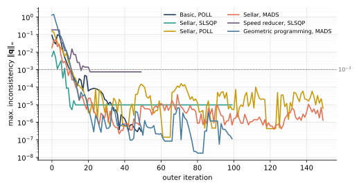
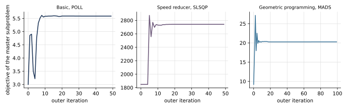

Benchmarking#
This chapter reports how DMDO performs on the classic test problems of distributed MDO, and how the results are kept reproducible.
Where the numbers come from#
Every result below, except those of the supersonic business jet (see Supersonic business jet), comes from the
recorded regression traces in tests/golden/traces. Each trace is the
complete history of one run (the objective of the master subproblem and the maximum inconsistency at every outer
iteration, the final multipliers, penalty weights and design), recorded with fixed seeds on Windows with Python 3.12.
The test suite runs the same problems again and requires the current code to reproduce every trace bit for bit,
so the figures and tables of this chapter describe what the released code computes. They are regenerated from the
traces, without running any optimization, by:
$ python docs_src/scripts/plot_benchmarks.py
Test problems#
Run |
SPs |
Copies |
Coordinator (\(\beta\), \(\gamma\), scheme) |
Outer budget |
Inner solver (budget) |
|---|---|---|---|---|---|
Basic problem |
2 |
8 |
1.3, 0.5, |
50 |
OMADS |
Sellar [Sellar et al., 1996] |
2 |
9 |
2.0, 0.5, |
100 |
SciPy SLSQP (150) |
Sellar |
2 |
9 |
1.3, 0.2, |
150 |
OMADS |
Sellar |
2 |
9 |
1.3, 0.2, |
150 |
OMADS |
Speed reducer [Golinski, 1970] |
4 |
20 |
1.3, 0.5, |
50 |
SciPy SLSQP (150) |
Geometric programming |
3 |
17 |
1.3, 0.2, |
100 |
OMADS |
SPs is the number of subproblems and Copies the number of variable copies (rows of the variables table). The
problem statements and their partitions are given in The Sellar problem and in the test module
tests/test_basic.py. Every run uses its full outer budget (no early stop).
Results#
Run |
SPs |
Inner solver |
Outer iterations |
Final objective |
Best known solution |
Gap |
Final max. inconsistency |
First iteration with max. inconsistency < 1e-3 |
|---|---|---|---|---|---|---|---|---|
Basic, POLL |
2 |
OMADS poll |
50 |
5.58977 |
5.58 |
+0.18 % |
3.05e-07 |
10 |
Sellar, SLSQP |
2 |
SciPy SLSQP |
100 |
3.60373 |
3.18339 |
+13.20 % |
9.72e-06 |
6 |
Sellar, POLL |
2 |
OMADS poll |
150 |
3.5216 |
3.18339 |
+10.62 % |
6.24e-06 |
11 |
Sellar, MADS |
2 |
OMADS MADS |
150 |
3.2042 |
3.18339 |
+0.65 % |
1.29e-06 |
9 |
Speed reducer, SLSQP |
4 |
SciPy SLSQP |
50 |
2741.41 |
2994.36 |
-8.45 % |
7.40e-04 |
16 |
Geometric programming, MADS |
3 |
OMADS MADS |
100 |
20.2632 |
17.59 |
+15.20 % |
1.14e-07 |
11 |
Best known solutions: Sellar and speed reducer from Tedford and Martins [2010] (Sects. 5.1 and 5.2), geometric programming from Talgorn et al. [2017] (Table 1); the basic problem’s, 5.58, has no published reference. The gap is relative to the best known solution.


Figure 8 Maximum inconsistency between the copies of the disciplines at each outer iteration.#
Consistency. In every run the coordinator brings the copies held by different subproblems into agreement quickly: the maximum inconsistency falls below \(10^{-3}\) within 6 to 16 outer iterations (Figure 8). Five of the six runs end between \(1.1\times10^{-7}\) and \(9.7\times10^{-6}\); the speed reducer, which has the most copies (20 across 4 subproblems) and the shortest budget (50 iterations), ends at \(7.4\times10^{-4}\).
Sellar: the choice of inner solver#

Figure 9 Sellar problem with three inner solvers: objective of the master subproblem (left) and maximum inconsistency (right). The dashed line is the best known solution \(f^\ast = 3.18339\).#
The Sellar problem has a known optimum, \(f^\ast = 3.18339\) at \((z_1, x_1, x_2) = (1.9776, 0, 0)\) [Tedford and Martins, 2010], which makes it a direct test of the coordination. With derivative-free MADS subproblems, DMDO ends at \(f = 3.2042\), 0.65 % above the optimum, with the disciplines consistent to \(1.3\times10^{-6}\). With the poll step alone and with SLSQP, the coordination also reaches consistency (\(6.2\times10^{-6}\) and \(9.7\times10^{-6}\)) but settles on designs 10.6 % and 13.2 % above the optimum.
In Figure 9, the SLSQP objective stays within 0.5 % of its final value from the sixth outer iteration on, while the penalty weights of the stalled links keep growing (to \(6\times10^{110}\) by the end of that run): once the consistency penalty dominates the subproblem objectives, the shared variables stop moving. The MADS run keeps improving until about the thirteenth iteration. A likely explanation is that the global search step of MADS keeps exploring the subproblem design space while the weights are still moderate, whereas a local gradient-based solve stays near its previous point. Choosing the inner solver per subproblem, and limiting how fast the weights grow (\(\beta\), \(\gamma\) and the update scheme, see Background), therefore matters as much as the coordination itself.
Speed reducer, geometric program and basic problem#


Figure 10 Objective of the master subproblem along the outer iterations.#
Figure 10 shows the objectives settling early: they stay within 0.5 % of their final values from outer iteration 7 (geometric program), 9 (speed reducer) and 10 (basic problem) on, about when the inconsistency drops below \(10^{-3}\).
Speed reducer (Golinski’s gear-box design, 7 design variables and 11 constraints split over 4 subproblems): final objective 2741.41, 8.45 % below the best known solution \(f^\ast = 2994.355026\) at \((z_1, z_2, x_{21}, x_{31}) = (0.7, 17, 7.3, 7.7153199)\) [Tedford and Martins, 2010]. A value below the optimum is possible only because this run is not exactly consistent and feasible: it ends with a maximum inconsistency of \(7.4\times10^{-4}\), and the regression suite accepts subproblem constraint violations up to \(h \le 0.06\) for it. Its acceptance band is \(\pm 5\,\%\) around 2713.66 (next section).
Geometric programming (14 variables, 4 coupling equalities and 6 inequalities over 3 subproblems): final objective 20.2632, 15.2 % above the best known solution \(f^\ast = 17.59\) [Talgorn et al., 2017], with zero constraint violation and the tightest final consistency of all runs, \(1.1\times10^{-7}\).
Basic problem: final objective 5.58977, 0.18 % above the best known solution 5.58, with consistency \(3.1\times10^{-7}\) after 50 iterations of the poll-step solver.
Supersonic business jet#
The supersonic business jet (SBJ) of Tosserams et al. [2010] couples four subproblems (aircraft,
propulsion, aerodynamics and structures, tests/SBJ); its objective is the total weight \(W_t\), and the best
known solution is \(W_t^\ast = 33{,}600\) lb, the lowest optimal weight of their all-in-one optimizations from
100 random starting points (Table 2 of that paper). Unlike the runs above, the SBJ results come from benchmarking
campaigns rather than from recorded regression traces. All constraints use the progressive barrier.
Inner solver and campaign |
Runs |
Final weight \(W_t\) |
Gap to \(W_t^\ast\) |
Final max. inconsistency |
|---|---|---|---|---|
SciPy SLSQP (at most 50 iterations per solve, 100 outer iterations) |
1 |
35,374 lb |
+5.3 % |
\(4.4\times10^{-5}\) |
OMADS MADS (150 evaluations per solve, 500 in the structures subproblem) |
100 |
33,536 lb (median of 86) |
−0.2 % (median) |
\(8.8\times10^{-9}\) (median) |
SLSQP: the inconsistency falls below \(10^{-3}\) at outer iteration 14 and below \(10^{-4}\) at iteration 32; the largest remaining constraint violation is \(3.8\times10^{-4}\).
MADS (run in March 2026 with DMDO 2601 and OMADS 2401; coordinator \(\beta = 1.8\), \(\gamma = 0.9\)): every one of the 100 starts brings the inconsistency below \(10^{-3}\) (median outer iteration 13) and below \(10^{-4}\) (median iteration 18). The weight is the median of the 86 runs that end consistent and meet the 2000 nm range requirement (middle half 26,600–38,800 lb). These histories record only the range constraint, so a median slightly below \(W_t^\ast\) is compatible with small violations of the other disciplines’ constraints.
With only 50 evaluations per solve, MADS does not reach an inconsistency of \(10^{-3}\) within 100 outer iterations: the structures subproblem, with 72 constraints, needs the larger budget.
Regression suite#
tests/test_basic.py runs on Linux, Windows and macOS in continuous integration. Each problem must reach the
following targets within its budget; f is the objective of the master subproblem, h the largest constraint
violation and q the final maximum inconsistency.
Problem and solver |
Targets |
|---|---|
Sellar, SciPy SLSQP |
\(|f - 3.18339| / 3.18339 \le 0.22\), \(h \le 10^{-3}\), \(q \le 10^{-4}\) |
Sellar, OMADS |
\(|f - 3.18339| / 3.18339 \le 0.6\), \(h \le 10^{-3}\), \(q \le 6\times10^{-4}\) |
Sellar, OMADS |
\(|f - 3.18339| / 3.18339 \le 0.3\), \(h \le 10^{-3}\), \(q \le 5\times10^{-3}\) |
Speed reducer, SciPy SLSQP |
\(|f - 2713.66| / 2713.66 \le 0.05\), \(h \le 0.06\), \(q \le 2\times10^{-3}\) |
Speed reducer, OMADS |
\(|f - 2713.66| / 2713.66 \le 0.07\), \(h \le 10^{-4}\), \(q \le 8\times10^{-3}\) |
Geometric programming, OMADS |
\(|f - 15| / 15 \le 2\), \(h = 0\), \(q \le 10^{-4}\) |
Besides these targets, the suite checks behavior that a distributed method has to guarantee:
Bit-for-bit regression. With
DMDO_GOLDEN=1, the six runs above (and the basic problem) are repeated and must reproduce their recorded traces exactly.Order-independent parallel sweeps. The Jacobi sweep gives identical results when its subproblems are solved in process, in reversed order, with results returned out of order, and in a pool of worker processes.
Exact resume. A run interrupted after a few outer iterations and resumed from its checkpoint ends with the same result as an uninterrupted run.
Identical drivers.
run(),step()andask()/tell()produce the same results, as do runs driven over the HTTP service with remote workers.
Run the suite locally with:
$ pip install -e .
$ pytest tests # the regression suite (about 45 minutes)
$ DMDO_GOLDEN=1 pytest tests/golden # bit-for-bit comparison with the recorded traces
Note
The traces were recorded on Windows; other platforms may differ in the last digits, which is why the bit-for-bit comparison is opt-in. The acceptance criteria above are platform independent.